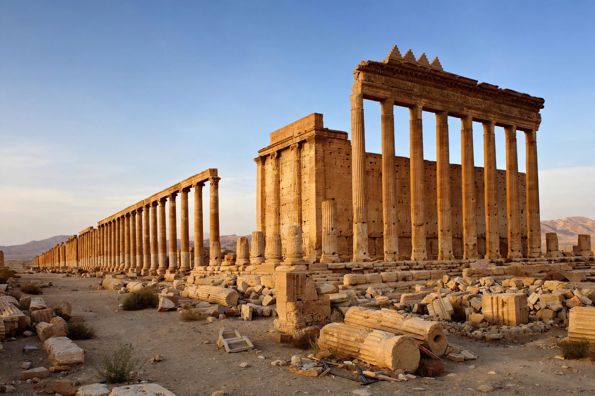

| Palmyra (Tadmor) | |
|---|---|
| Location | Homs Governorate, Syria |
| Founded | Ancient oasis; flourished 1st–3rd c. AD |
| Notable queen | Zenobia |
| Status | UNESCO World Heritage Site |

Palmyra (Arabic: Tadmor) was an ancient Arab city in the Syrian desert, in present-day Homs Governorate, Syria, that grew rich as a caravan oasis linking the Roman world with Mesopotamia, Persia and the Silk Road trade.
Mentioned as Tadmor in texts from the 2nd millennium BC, Palmyra was incorporated into the Roman Empire under Tiberius and flourished in the 1st–3rd centuries AD, its merchants organising caravans to the Euphrates and the Gulf. Its landmarks include the Temple of Bel (dedicated 32 AD), the Great Colonnade, theatre, agora and tower tombs, blending Greco-Roman and local Aramaic traditions; Palmyrene Aramaic inscriptions are bilingual with Greek.
After Odaenathus, the city's ruler who defended Rome's east against Persia, was murdered in 267, his widow Zenobia conquered Egypt and Anatolia, proclaiming a Palmyrene Empire. Emperor Aurelian defeated her in 272–273 and destroyed much of the city after a second revolt.
The ruins are a UNESCO World Heritage Site. During the Syrian civil war, Islamic State forces occupied Palmyra in 2015–2016 and destroyed the Temple of Bel, Temple of Baalshamin, Arch of Triumph and other monuments, and murdered antiquities chief Khaled al-Asaad; Syrian forces retook the site in 2016–2017.